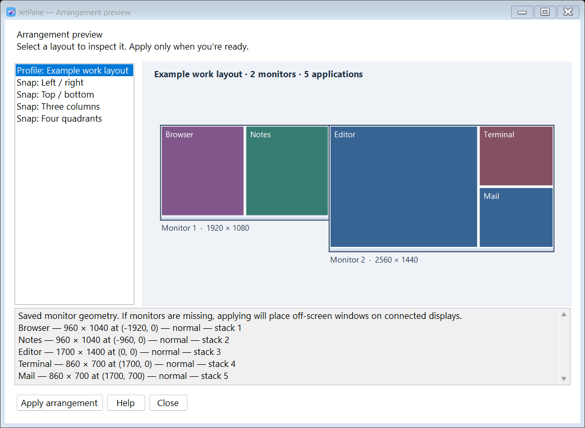
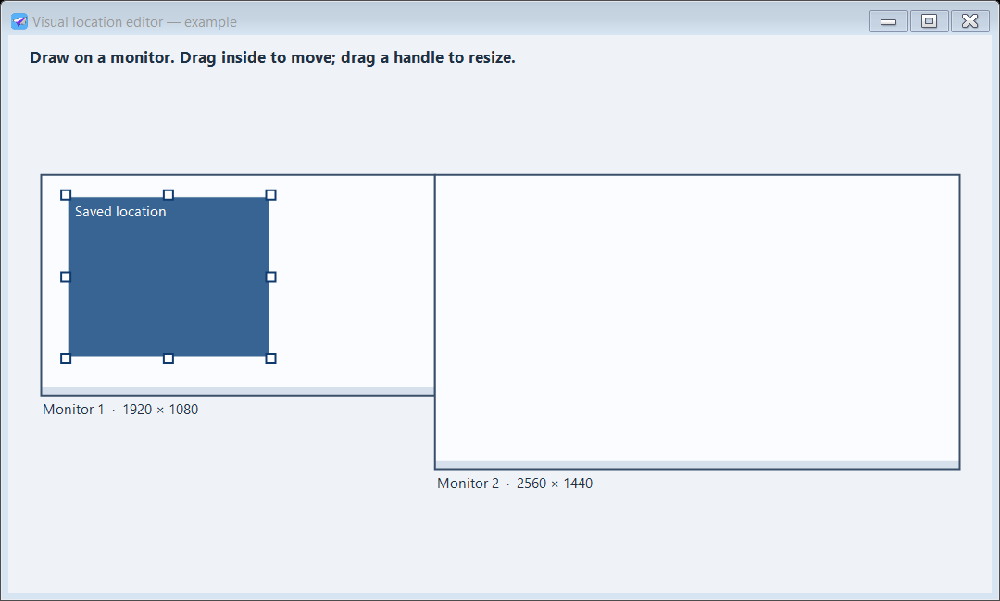

Save it as a profile.
Positions, sizes, window states and stacking order. Load a profile to restore open apps and launch missing ones. Assign profiles to monitor configurations for docking layouts.
Profile controls →Save a workspace across your monitors. Draw exactly where a window belongs. Get it there with a shortcut.
v1.1.1 prerelease · Windows x64 · Portable ZIP
No installer, account or separate runtime installation.
Clear desk.
Clear next move.
Illustrative layout — your applications stay on your device.
Keep a layout for the work in front of you. Profiles remember an arrangement; locations put one active window exactly where you want it.
Interactive illustration. These controls do not move your actual windows.
Positions, sizes, window states and stacking order. Load a profile to restore open apps and launch missing ones. Assign profiles to monitor configurations for docking layouts.
Profile controls →Drag across the monitor diagram, move the rectangle, resize its handles, or enter exact coordinates. Give it a shortcut. Press it to place the active application.
Visual location editor →Halves, thirds or quadrants. Fill slots automatically, reserve a slot for an application, and swap unlocked windows. Snapping controls one chosen monitor at a time.
Snap layouts and locks →Actual rendered app views, using clearly labeled example layouts. A preview is just a preview until you choose Apply.


Start with the defaults. Then choose combinations that fit your keyboard and your work.
Customize every action →JetPane runs in the tray and keeps settings beside the executable. No app telemetry or cloud account. Optional start with Windows is an explicit choice.
Extract the complete ZIP into a writable folder and run JetPane.exe. The .NET runtime is bundled; native runtime files may unpack into the Windows temporary cache. Keep Help.html beside it. Exit before moving or deleting the folder, and disable optional startup first.
Yes. Profiles record windows across displays, including negative desktop coordinates. Monitor-geometry assignments select a profile when the configuration changes. Missing-monitor positions are kept inside a connected work area. Two physically different setups with the same geometry share a signature.
Profiles save one position per process name. Explorer, ApplicationFrameHost, tool/cloaked windows and normal windows below 400×300 are excluded from automatic management. Administrator apps can reject movement; applications may enforce minimum sizes or move themselves.
This is an early prerelease. 31 local checks and a tray smoke test passed, including movement on two attached monitors. Physical docking, login startup, real editor gestures and broader third-party app/shortcut compatibility still need wider validation. Full source and test evidence are in the repo.
Export profiles, locations, shortcuts and settings to a .wpilot file. Import validates it and backs up the previous configuration. Settings from the earlier WindowPilot build remain compatible. PositionPro .ppro files are not supported.
Download, extract, arrange. Keep the help and your settings close by.